日文五十音 Japanese Letters
あ行 "A" Column
あ ア
 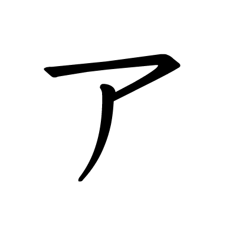
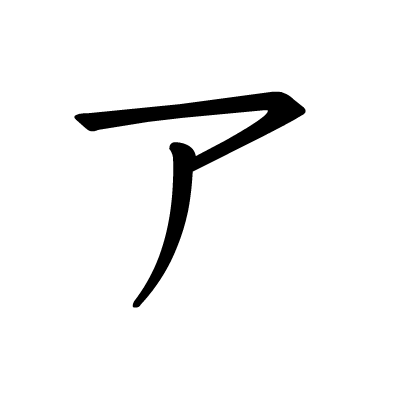
あ是日文的第一個字母，發音同英文的a。這個字母來源於中文中「安」這個字。ア則是來自於中文的「阿」。
あ is the first letter in Japanese, the pronunciation is same as "a". It is born from the Chinese letter "安", and ア is from "阿".
い イ


い是第二個字母，發音是i。這個字母來自於中文字的「以」，而イ則是來自於「伊」的偏旁。
い is the second letter, the pronunciation is "i". It is born from the Chinese letter "以", and イ is from the left side of "伊".
う ウ

う是第三個字母，發音是u。這個字母來自於中文字「宇」。ウ也是一樣。
う is the third letter, the pronunciation is "u". It is born from the Chinese letter "宇", and ウ is also from "宇".
え エ

え是第四個字母，發音是e。來自於「衣」這個字。エ則是來自於「江」。
え is the fourth letter, the pronunciation is "e". It is from the Chinese letter "衣", and エ is from "江".
お オ

お是第五個字母，發音是o。來自於「於」這個字。オ也是來自於「於」。
お is the fifth letter, the pronunciation is "o". It is from the Chinese letter "於", and so is オ.
か行 "Ka" Column
か カ
か是第六個字母，發音是ka。來自於「加」這個字。カ也是一樣。
か is the sixth letter, the pronunciation is "ka". It is from the Chinese letter "加", and so is カ.
き キ

き是第七個字母，發音是ki。這個字母來自於中文字的「幾」，キ也是一樣。
き is the second letter, the pronunciation is "ki". It is from the Chinese letter "幾", and so is キ.
く ク


く是第八個字母，發音是ku。這個字母來自於中文字「久」。ク也是一樣。
く is the eighth letter, the pronunciation is "ku". It is from the Chinese letter "久", and so is く.
け ケ


け是第九個字母，發音是ke。來自於「計」這個字。ケ則是來自於「介」。
け is the ninth letter, the pronunciation is "ke". It is from the Chinese letter "計", and ケ is from "介".
こ コ
 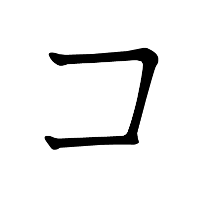
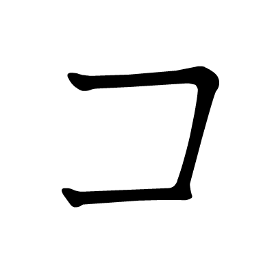
こ是第十個字母，發音是ko。來自於「己」這個字。コ也是一樣。
こ is the tenth letter, the pronunciation is "ko". It is from the Chinese letter "己", and so is コ.
さ行 "Sa" Column
さ サ

さ是第十一個字母，發音是sa。來自於「左」這個字。サ則是「散」。
さ is the eleventh letter, the pronunciation is "sa". It is from the Chinese letter "左", and サ is from "散".
し シ

し是第十二個字母，發音是shi。這個字母來自於中文字的「之」，シ也是一樣。
し is the twelveth letter, the pronunciation is "shi". It is from the Chinese letter "之", and so is シ.
す ス


す是第十三個字母，發音是su。這個字母來自於中文字「寸」。ス則是「須」。
す is the thirteenth letter, the pronunciation is "su". It is from the Chinese letter "寸", and ス is "須".
せ セ


せ是第十四個字母，發音是se。來自於「世」這個字。セ也是一樣。
せ is the fourteenth letter, the pronunciation is "se". It is from the Chinese letter "世", and so is セ.
そ ソ


そ是第十五個字母，發音是so。來自於「曾」這個字。ソ也是一樣。
そ is the fifteenth letter, the pronunciation is "so". It is from the Chinese letter "曾", and so is ソ.
た行 "Ta" Column
た タ

た是日文的第十六個字母，發音是ta。來自於「太」這個字。タ則是來自於「多」。
た is the sixteenth letter, the pronunciation is "ta". It is from the Chinese letter "安", and タ is from "阿".
ち チ


ち是第十七個字母，發音是chi。來自於「知」這個字，而チ則是來自於「千」。
ち is the seventeenth letter, the pronunciation is "chi". It is from the Chinese letter "知", and チ is from "千".
つ ツ


つ是第十八個字母，發音是tsu。來自於「川」這個字。ツ也是一樣。
つ is the eighteenth letter, the pronunciation is "tsu". It is born from the Chinese letter "川", and so is ツ.
て テ

て是第十九個字母，發音是te。來自於「天」這個字。テ也是一樣。
て is the nineteenth letter, the pronunciation is "te". It is from the Chinese letter "天", and so is テ.
と ト


と是第二十個字母，發音是to。來自於「止」這個字。ト也是一樣。
と is the twentieth letter, the pronunciation is "to". It is from the Chinese letter "止", and so is ト.
な行 "Na" Column
な ナ
な是第二十一個字母，發音是na。來自於「奈」這個字。ナ也是一樣。
な is the twenty-first letter, the pronunciation is "na". It is from the Chinese letter "奈", and so is ナ.
に 二

に是第二十二個字母，發音是ni。這個字母來自於中文字的「仁」，二則是來自「二」。
に is the twenty-second letter, the pronunciation is "ni". It is from the Chinese letter "仁", and 二 is from "二".
ぬ ヌ


ぬ是第二十三個字母，發音是nu。這個字母來自於中文字「奴」。ヌ也是一樣。
ぬ is the twenty-third letter, the pronunciation is "nu". It is from the Chinese letter "奴", and so is ヌ.
ね ネ

ね是第二十四個字母，發音是ne。來自於「禰」這個字。ネ也是一樣。
ね is the twenty-fourth letter, the pronunciation is "ne". It is from the Chinese letter "禰", and so is ネ.
の ノ

の是第二十五個字母，發音是no。來自於「乃」這個字。ノ也是一樣。
の is the twenty-fifth letter, the pronunciation is "no". It is from the Chinese letter "乃", and so is ノ.
は行 "Ha" Column
は ハ


は是第二十六個字母，發音是ha。來自於「波」這個字。ハ則是「八」。
は is the twenty-sixth letter, the pronunciation is "ha". It is from the Chinese letter "波", and ハ is from "八".
ひ ヒ


ひ是第二十七個字母，發音是hi。來自於「比」這個字，ヒ也是一樣。
ひ is the twenty-seventh letter, the pronunciation is "hi". It is from the Chinese letter "比", and so is ヒ.
ふ フ

ふ是第二十八個字母，發音是fu。這個字母來自於中文字「不」。フ也是一樣。
ふ is the twenty-eighth letter, the pronunciation is "fu". It is from the Chinese letter "不", and so is フ.
へ ヘ


へ是第二十九個字母，發音是he。來自於「部」這個字。ヘ也是一樣。
へ is the twenty-ninth letter, the pronunciation is "he". It is from the Chinese letter "部", and so is ヘ.
ほ ホ
 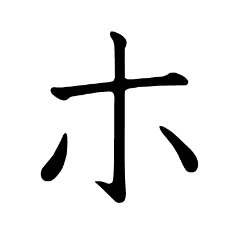
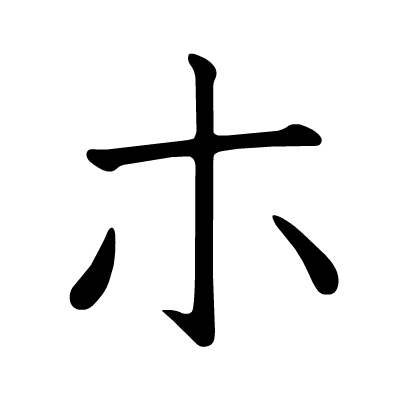
ほ是第三十個字母，發音是ho。來自於「保」這個字。ホ也是一樣。
ほ is the thirtieth letter, the pronunciation is "ho". It is from the Chinese letter "保", and so is ホ.
ま行 "Ma" Column
ま マ


ま是第三十一個字母，發音是ma。來自於「未」這個字。マ則是「万」。
ま is the thirty-first letter, the pronunciation is "ma". It is from the Chinese letter "未", and マ is from "万".
み ミ


み是第三十二個字母，發音是mi。這個字母來自於中文字的「義」，ミ則是「三」。
み is the thirty-second letter, the pronunciation is "mi". It is from the Chinese letter "義", and ミ is from "三".
む ム


む是第三十三個字母，發音是mu。這個字母來自於中文字「武」。ム則是「牟」。
む is the thirty-third letter, the pronunciation is "mu". It is from the Chinese letter "武", and ム is "牟".
め メ


め是第三十四個字母，發音是me。來自於「女」這個字。メ也是一樣。
め is the thirty-fourth letter, the pronunciation is "me". It is from the Chinese letter "女", and so is メ.
も モ


も是第三十五個字母，發音是mo。來自於「毛」這個字。モ也是一樣。
も is the thirty-fifth letter, the pronunciation is "mo". It is from the Chinese letter "毛", and so is モ.
や行 "Ya" Column
や ヤ

や是第三十六個字母，發音是ya。來自於「也」這個字。ヤ也是一樣。
や is the thirty-sixth letter, the pronunciation is "ya". It is from the Chinese letter "也", and so is ヤ.
ゆ ユ
ゆ是第三十七個字母，發音是yu。這個字母來自於中文字「由」。ユ也是一樣。
ゆ is the thirty-seventh letter, the pronunciation is "yu". It is from the Chinese letter "由", and so is ユ.
よ ヨ
 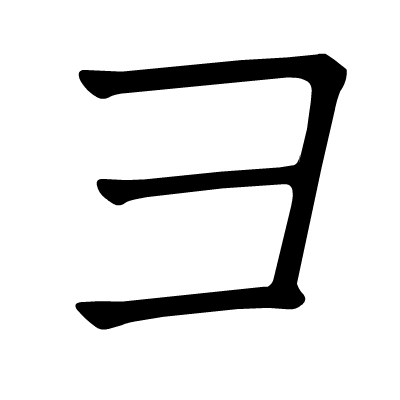
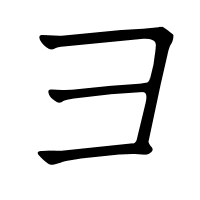
よ是第三十八個字母，發音是yo。來自於「與」這個字。ヨ也是一樣。
よ is the thirty-eighth letter, the pronunciation is "yo". It is from the Chinese letter "與", and so is ヨ.
ら行 "Ra" Column
ら ラ
 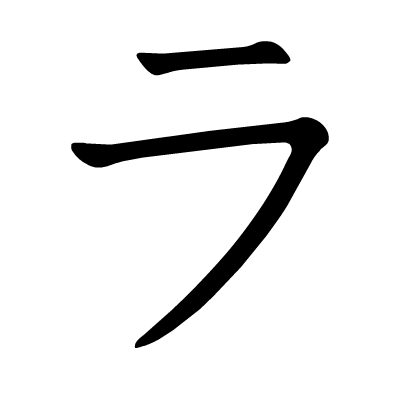
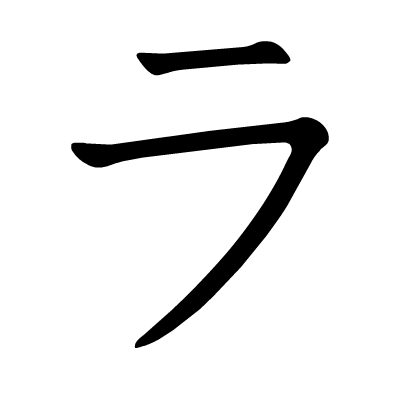
ら是第三十九個字母，發音是ra。來自於「良」這個字。ラ則是一樣。
ら is the thirty-ninth letter, the pronunciation is "ra". It is from the Chinese letter "良", and so is ラ.
り リ


り是第四十個字母，發音是ri。這個字母來自於中文字的「利」，リ也是一樣。
り is the fortieth letter, the pronunciation is "ri". It is from the Chinese letter "利", and so is リ.
る ル

る是第四十一個字母，發音是ru。這個字母來自於中文字「留」。ル則是「流」。
る is the forty-first letter, the pronunciation is "ru". It is from the Chinese letter "留", and ル is "流".
れ レ


れ是第四十二個字母，發音是re。來自於「礼」這個字。レ也是一樣。
れ is the forty-third letter, the pronunciation is "re". It is from the Chinese letter "礼", and so is レ.
ろ ロ

ろ是第四十三個字母，發音是ro。來自於「呂」這個字。ロ也是一樣。
ろ is the forty-fourth letter, the pronunciation is "ro". It is from the Chinese letter "呂", and so is ロ.
わ行 "Wa" Column
わ ワ
 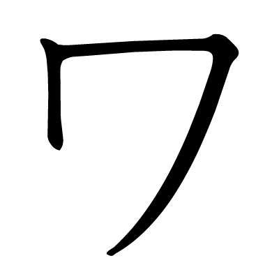
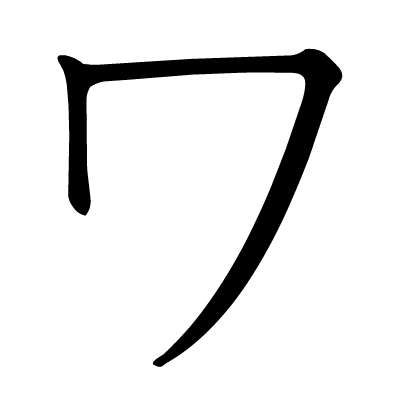
わ是四十四個字母，發音是wa。來自於「和」這個字。ワ也是一樣。
わ is the forty-fourth letter, the pronunciation is "wa". It is from the Chinese letter "和", and so is ワ.
を ヲ


を是四十五個字母，發音是wo。來自於「遠」這個字。ヲ則是「乎」。
を is the forty-fifth letter, the pronunciation is "wo". It is from the Chinese letter "遠", and ヲ is from "乎".
ん行 "N" Column
ん ン


ん是最後一個字母，發音是鼻音n。並沒有來自於哪一個中文字。
ん is the last letter, the pronunciation is nasal "n". It is not from any Chinese Character.